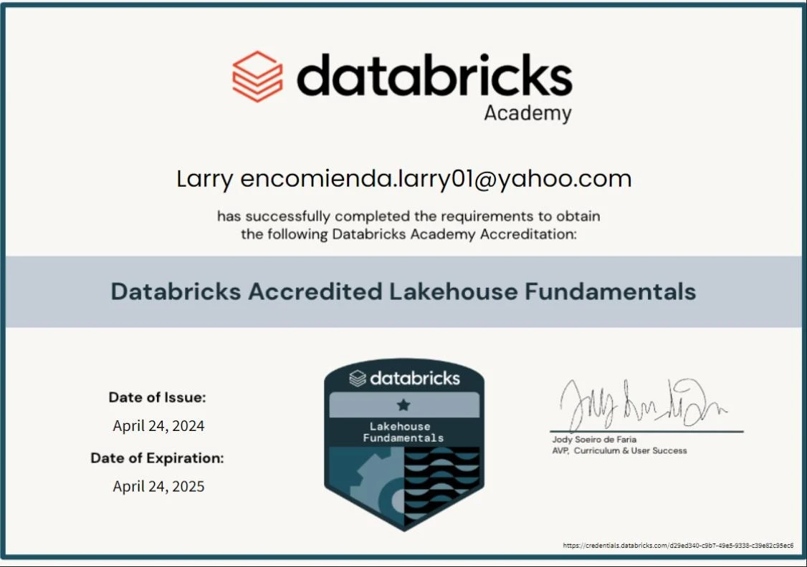

BASED IN RIYADH, BUILDING FOR GLOBAL TEAMS
Turning complex
data into
clarity.
Senior Data Engineer & Cloud Builder with approximately 11 years of progressive experience across enterprise data platforms, backend engineering, DevOps delivery, and AI-enabled analytics in banking, capital markets, and healthcare.
I build the systems
behind better decisions.
My path started with reporting and analytics and grew into enterprise data engineering, cloud platforms, backend development, DevOps, and AI-enabled workflows.
Over approximately 11 years, I’ve worked with the moving parts of demanding data environments—from banking transactions and brokerage reconciliation to healthcare revenue cycle analytics.
What motivates me: taking a complicated operational problem and engineering a solution that teams can trust.
Clarity Health RCM
Derayah Financial
Different tools.
One engineering mindset.
Explore the areas I work across. Select a discipline to see a focused technical stack.
Skills reflect the uploaded CV. Some technologies are noted there as additional exposure, rather than confirmed production depth.
Real challenges.
Engineered solutions.
Selected work themes drawn from professional experience. These are project summaries, not public client deliverables.
A career built
one system at a time.
From analyst to enterprise platform engineering. Click any role to explore the technologies and work involved.
Credentials that
back the craft.
Professional certifications, technology accreditations and completed training—each labeled accurately. Click a card to view the supporting document.
Databricks Lakehouse Fundamentals
Databricks Academy Accreditation covering core Lakehouse concepts, Databricks SQL, Delta Lake, security basics, and platform foundations. Issued April 24, 2024; expired April 24, 2025. Displayed as a historical academy accreditation, not an active certification.

Certificate images supplied by the portfolio owner. A training course titled “AWS Certified …” is a Udemy course completion, not an AWS-issued professional certification. Some screenshots and certificates show differing dates, so the source document controls.
“Good engineering isn't just getting data from A to B. It's making sure people can depend on what happens in between.”
My engineering philosophy · Reliability, traceability, and continuous improvement
HAVE A ROLE, CHALLENGE, OR IDEA?
Let's build
what's next.
Interested in Senior Data Engineering, Cloud Data, Backend, DevOps, or AI-enabled data platform opportunities with remote and global teams.